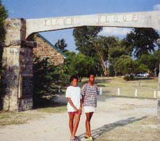
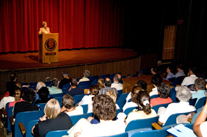
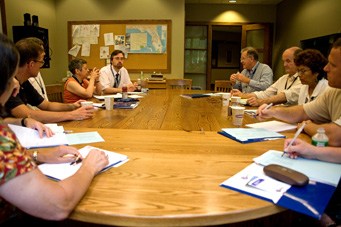
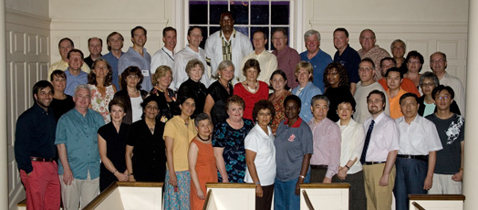
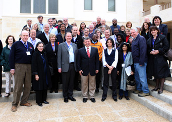

The Evolution of Global Connections
Global Connections I, South Africa & Botswana, 1997
- 
Global Connections I was jointly hosted by St. Stithians College and Collegiate in Randburg, South Africa, and the Maru A Pula School in Gaborone, Botswana in February 1997.
Thanks to the combined interests of David Wylde, Rector of St. Stithians and an early advocate for education outreach and training prior to and during the transformation to the "new" South Africa and Malcolm McKenzie, a South African Rhodes Scholar, teacher and Principal at the leading national school in Botswana, the first annual Seminar on Global Connections was held in those two countries.
A total of 41 principals and head teachers from 10 countries participated in the four-day South African program while eight continued on to visit Marwana, Maru a Pula's environmental camp on the Limpopo River, the school itself in Gaborone, and then, finally the famous Tiger Kloof Educational Center in Vryburg, South Africa, a campus where almost all the facilities including an extraordinary chapel were built by the students and teachers since the School's founding in 1904.
The focus of GC I was on the importance of educational transformation and, simultaneously, the retention of one's own cultural identity. The keynote address was given by David Matthews, Principal of Tiger Kloof. Of those participating, approximately half were Principals of Township secondary schools in greater Johannesburg; the mix of advantaged and less advantaged schools was considerable and all participants learned a great deal about the importance of transparency and transformation in the days spent together. Visits were also made to a wide variety of national schools in the greater Pretoria-Johannesburg area.
At the conclusion of the Seminar, it was proposed that a continuum of national, regional and global connections be continued. The concept was proposed and given the name, Zwelibanzi, which in Zulu means "wide world."
This organization has continued to meet since March 1997 and to provide a local and national catalyst for further collaborative efforts between schools.
Global Connections II, Australia, Victoria and New South Wales, 1998
Global Connections II was held Down Under in 1998 in two areas of Australia, Victoria and New South Wales. The initial host was the Geelong Grammar School, founded in 1855 with 14 boys. Now, with a co-educational boarding and day enrollment of 1550 students and four campuses it is one of the largest independent school in the world. The second host was the Sydney Church of England Coeducational Grammar School, known nationally and internationally as SCECGS/Redlands, an equally progressive school which is widely regarded for its range of courses and programs including a tertiary college of physical education. Both Heads of School had participated in Global Connection I and prepared agendas to broaden the knowledge and horizons of the 61 participants from 12 countries.
Whereas GC I had focused on transformation in secondary education in the new South Africa, the themes of GC II addressed the following issues:
- Uses and Abuses of Information Technologies and Global Communication
- Community Service and Values Education
- Experiential Education
- Roles and Relations of Advantaged and Less-Advantaged Schools Nationally, Regionally and Internationally
Considerable time was also given to discussing the roles of national schools which evidenced global interests and the development of an international school within a historical and cultural context not always receptive to such a concept. Questions of aboriginal, tribal, and minority interests were widely discussed and visits were made to schools in Melbourne and Sydney which reflected both the impact of immigration and the continuing concern over First Peoples integration and education in the public sector.
View Outcomes for Global Connections II
Global Connections III, Crowthorne, United Kingdom, 1999
Global Connections III Leadership Training and Team Building,which was eminently appropriate for the host school, Wellington College, one of England's recognized leaders in this area. Some 49 persons from 13 countries were challenged during the course of four days by Wilderness Expertise, an in-house organization specializing in the development of various learning initiatives which illustrate the need for cogitative and collaborative efforts on the parts of individuals as well as small and large groups to demonstrate both the teamwork and leadership needed to achieve known and unknown objectives.
Visits to two eminent British public schools, Eton and St. Edward's, reminded participants of the historical longevity of the English boarding school. However, at the latter, a most contemporary commentary by the Head of School served notice that vision and the courage to implement it were, sadly, commodities in short supply in current school leadership.
Leadership was not wanting, however, in learning about the contributions being made by a number of schools in critical areas of the world: Fultz College/Albania in technology and business training and rehabilitation of refugees; International College/Lebanon's survival from civil war to revival of domestic and international academic standards of excellence; American Farm School/Greece significant outreach nationally and regionally in agricultural training and management; and Falcon College/Zimbabwe, the training of indigenous populations in the value and preservation of the environment.
View Outcomes for Global Connections III
Global Connections IV, Massachusetts, United States of America, 2000
Global Connections IV centered on Environmentalism, an issue being addressed increasingly by secondary schools worldwide. As Principal Li of the No. 1 Middle School to Central China Normal University wrote:
High school students have a certain range of knowledge, and they also have the conditions to master the knowledge of environmental protection. They are just going to enter university for further study or go to society for work. Whether they possess complete environmental protective knowledge has a great deal to do with cultivating the qualified citizens who will take on the heavy responsibility of protecting the environment for the 21st century. Therefore, it is a must that high school students learn basic courses of environmental protection, obtain the basic knowledge and technical ability of environmental protection, and receive the education of scientific environmental conception order to strengthen their environmental sense and raise their consciousness of environmental protection.
Seventy four (74) other Principals, their representatives or delegates from nineteen (19) countries also endorsed the implementation of environmental education and shared examples of how their schools were introducing classes, programs, and community service projects to address ecological and environmental issues.
Participants at Global Connections IV prepared the Deerfield Declaration on Education for Sustainable Development, the Preamble of which states:
We, the delegates of the fourth Global Connections have gathered . . . to explore ways by which schools – educators and learners – can contribute to the attainment of sustainable development at local, national and global levels.
Concluding with a five-point initiative, the Deerfield Declaration emphasized the promotion of holistic and integrated educational experiences, the morality of our stewardship, the need for preserving ecological balance, the recognition of our indivisibility and the acknowledgement of the lore and wisdom of indigenous peoples who have taught us that we belong to Earth rather than the Earth belongs to us.
Speakers such as Gilbert Grosvenor, Chairman of the National Geographic Society Board of Trustees and Educational Foundation (US), Libby Grundy, Director of the Council for Environmental Education (UK), and Richard Winchell, President of the Friends of the Bermuda Aquarium, highlighted critical areas of the environment and cited educational initiatives being taken to address them while others, such as Gloria Villegas-Cardoza of the Boston Nature Center of the Massachusetts Audubon Society, Tom Heise, a teacher of History at Deerfield Academy, and Chris Oostenink, a scientist from The Hotchkiss School, provided specific examples of educational programs and projects involving students from independent schools and inner city centers which focused on broadening environmental knowledge and sensitivity.
The four day Seminar also provided for mini-presentations on specific school initiatives including those from the Horace Mann School (US), Falcon College (Zimbabwe), The Putney School (US), The Royal Grammar School (England) and the Yuendumu Community Education Centre (Northern Territory, Australia).
Of special interest were a poster session at which delegates were able to display information and artifacts on their environmental programs and talk informally about their courses, nature centers, community activities and collaborative interests and a visit to Milton Academy's Mountain School to observe first-hand their environmentally oriented programs of study.
Global Connections IV also included the announcement of two new initiatives, the creation of a web site at www.globalconnection.org (which has evolved into the current site) and the establishment of a public, not-for-profit entity under the U.S. tax code, the Global Connections Foundation, Inc. Both activities are supported through charitable contributions and are designed to provide opportunities for further resources and collaboration between schools nationally, regionally, and globally.
View Outcomes for Global Connections IV
Global Connections V, Kenya, Africa, 2001
Global Connections V combined both an exploration of Student Leadership in the Education process and a celebration of the Seminar's return to Africa. The initial gathering of Global Connections in 1997 was co-hosted by St. Stithians College and Collegiate in South Africa and the Maru a Pula School in Botswana. On that occasion there were 41 heads of school and other educators from 10 countries.
At Global Connections V, hosted by the Starehe Boys' Centre and School in Nairobi, Kenya, 71 principals and directors of educational associations from 27 countries gathered to discuss a theme that influences and affects schools and youth worldwide. Some 25 presenters ranging from Lady Justice Joyce Aluoch, Justice of the High Court of Kenya to Peter Kapenga, Deputy Principal of the Ramallah Friends School in the Occupied West Bank, and Malcolm McKenzie, Principal of the United World College of the Atlantic; all of whom provided insight and differing opinions as to the question of the students' roles and responsibilities in leadership.
Starehe itself became a role model. Its concepts of leadership, trust and responsibility challenged all participants. The relevance of the concept of leadership within the Starehe community was reinforced as one learned that this institution, approaching its 42nd anniversary and with the Founding Director still at the helm, provides first class education to some 1,100 young men from all over Kenya, 70% of whom are orphaned or come from destitute families.
In many respects, Starehe became the benchmark against which others could measure their own school's concepts of leadership. For example, the Starehe Boys' Scout troop is ranked number one in all of East Africa and yet there is no Scoutmaster. The older boys teach and take responsibility for the younger students. No teachers administer evening study halls and all students have the right of speech at the school's weekly Barazza where students' opinions, comments and critiques of school life may be made freely and without retribution before the entire school.
The Seminar focused on different styles and concepts of leadership worldwide in single sex and co-educational schools, boarding and day schools, private and public/government schools. Diversity of backgrounds, cultures and systems of education lent a depth and complexity to the issue of Student Leadership. Nevertheless, a Declaration on Youth Leadership in Schools was drafted, discussed and unanimously approved at the Seminar's final meeting. It reflects the ways in which schools can contribute to the nurturing and promotion of positive Student Leadership at local, national and global levels.
Global Connections VI, China, 2002
Global Connections VI "declaration" on Teaching and Learning Styles: Creativity and Innovation in the Classroom.
Great thanks are due Principal Li Shuisheng and his colleagues at the No. One Middle School attached to the Central China Normal University. Their efforts on behalf of the nearly 80 delegates and fellow educators were remarkable as were their efforts to present images of the Chinese way and education, a process which, like the city of Wuhan, exhibited patterns of the past as well as glimpses of the future. For those of us who were the waigoren, the foreigners, it was an important if not always apparent learning experience.
About one-third of the participants in GC VI were Chinese, a number of whom were members of the English faculty at the No. One Middle School. The remaining two-thirds of the delegates came from 16 other countries.
There were 10 presenters, 4 from China (Beijing, Shanghai, and Wuhan) and 6 from other countries worldwide (2 from Australia and 1 each from England, France, Turkey, and the United States). They spoke on topics as varied as their nationalities from "Pathways to Creativity from a French Perspective" and "Constructing a New Teaching Environment for Student Development," to "Piercing the Veil of the Future: A Strategic Approach to Innovation and Creativity" and "Construction of a New-type School with the Orientation Toward the Era of Knowledge Economy."
Each presentation was followed by questions, answers, and some discussion. In addition, there were daily small group meetings each involving members of the host school's English-speaking academic staff with conversations often spilling over to meal times and on some evenings to multi-lingual and multicultural sing-alongs involving marvelous Chinese opera solos, Kenyan folk songs, and karaoke performances by whomever felt so moved. Very innovative and creative!
Instead of a feeling of isolation, inclusion and a sense of partnership pervaded the entire program. Much of this is attributed to a cadre of 25 Global Connections "alumni," including Principal Li, as well as the efforts made by the Chinese. The sense of involvement was enhanced by spending two nights and two days on the Yangtze, the "Long-River," the Chang Jiang, "The River at the Center of the World" as it has been called by Simon Winchester in his book A Journey Up the Yangtze, and Back in Chinese Time.
The River, the third longest in the world at 3,964 miles, was our home, classroom and teacher. From it we learned ancient as well as contemporary history, learned about trackers, of Mao Zedong's masterful swims in the Yangtze, Wuhan's historical uniqueness, saw firsthand the bucolic beauty of the Three Gorges, the massive dam now nearing completion (which will span 6864 feet), the demarkations along the river's bank of the anticipated water level, and the myriad of new construction on the highest ground to accommodate those whose villages, cities, factories, and ancient temples will be flooded in 2003.
It was a learning experience: to sit in this rapidly changing scenery, the new and yet to come alongside of the what has been and to discuss Creativity and Innovation in the Classroom provided at once a sense of the absurd and an appreciation for the realities of change.
Collaboration was heightened on board ship as all meals, meetings, conversations, and sightseeing were shared. The commonness of proximity helped in aligning the differences in concepts and systems of education. The seeming impossible became possible. And the result was The Wuhan Declaration, a rather remarkable document in which the first item of the declaration proper states that: "it is understood and accepted that teaching and learning are about relationships," and which, in its opening statement, acknowledges that "change is ongoing and embracing."
Within the few days we were together, evidence of change in relations, attitudes, and involvement were perceived. From a cultural perspective the presence of the seventeen nationalities was enlightening and of interest to our hosts, especially the delegates from Africa whose appearance on the streets of Wuhan and elsewhere created as much of a surprise as others had in seeing the immensity of the new dam on the Yangtze or experiencing the magnitude of The Great Wall.
In many ways, GC VI established a benchmark of sharing, concurrence, and change, not only for an appreciation of differences but also the acceptance of a declaration which recognized, endorsed, and furthered the process of educational reform. As one presenter put it so well:
"The fact is that successful reform usually must be initiated and supported by you, by the heads of schools and their administrative team. But it must be initiated in the same way in which we call for innovation in the classroom. We are not always that sensitive to the teacher's needs or the constraints under which they work. Teachers must be involved. They must be given time to learn and reflect, and above all they must understand what the reform is all about. If they are asked to teach for understanding, we must administer for understanding. We must give them time in their busy schedule to make the changes we want from them. We must demonstrate why the changes are going to serve the students and in the end make their work more meaningful. All of this means that we must think before we act. In the words of Laozi: We must sit for awhile and "do nothing so that all will be accomplished."
- Livingston Merchant, Headmaster of Robert College, Istanbul, TurkeyRead and enjoy the Global Connections VI Wuhan Declaration
Global Connections VII, France, 2003
Global Connections VII tour de force.Hosted by L'Ermitage, a national school with a full range of International Baccalaureate courses, the Seminar was not only held in the magnificence of the 17th century Chateau of Maisons-Laffitte, designed by the famous architect, Mansart, but it also offered a stunning agenda of speakers and discussions on the topic of "Crossing Frontiers: Culture, Language, and Bilingualism."
The principal design of the Seminar was the concept of a Thematic Wheel, a series of related concentric circles connected internally and externally through the idea of achieving an international mindset and towards the evolution of a global citizen.
Presenters were from Bulgaria, England, France, Hong Kong, New Zealand, South Africa, and the United States. Each addressed a different aspect of the Thematic Wheel; "spokes," if you will, defining and describing the historical elements and evolution of cultural and linguistic frontiers, the school as an arena for the evolution of an international mindset, the teacher as a cultural manager, the role and impact of information technology, and the development of an international dimension within the framework of a national system. All spokes led from the challenge of crossing frontiers to the creation of a global citizen.
A total of 86 delegates from 24 countries attended GC VII and there were 14 additional participants from the host school. Three new countries participated: Bahrain, Guatemala, and Saudi Arabia. There were 75 schools of which 54 had been represented at one or more Seminars previously. A total of 21 new schools and 32 new participants were involved.
There were opportunities to visit the historic and cultural icon of Versailles as well as be entertained by a young "Edith Piaf" from the host school and other musicians, including several of the participating school delegates. These experiences involved all in different but significant ways and, as noted in the concluding Declaration of Global Connections VII:
We...deepened our understanding that we need to promote enabling environments that will celebrate and affirm a strong sense of cultural identity and validate the individual.
While at the same time we recognized that
... we need to provide our students with the skills they will need to move from the security of a clear sense of personal and cultural identity toward intercultural competencies, in order to be able to meet the requirements of responsible, global citizenship.
Global Connections VIII, Bulgaria and Romania, 2004
One of the themes of GC VIII was on Partnerships, the potential relationship among and between schools, communities, teachers, students, parents, and various shareholders in the educational process. One of the partnerships which was celebrated publicly was that between the Tiger Kloof Educational Institution in South Africa and Trinity School in New York City. Sonya Posmentier of Trinity wrote recently about this relationship:
One of the aims of the Tiger Kloof-Trinity partnership, a relationship that brings together teachers from very different schools that are oceans apart, is to promote Ubuntu, the notion that a person becomes a person through other persons. This principle most clearly defines the promises of the partnership.
In Bulgaria and Romania, this principle of becoming a person through interaction with other people was carried out fully. Eighty-two (82) school leaders from 24 countries met for the first time in two capitals where they deliberated not only on Education for Democracy, but also the kinds of Partnerships that could (and did) evolve from such meetings.
As the Preamble of the Declaration, which was drafted at the conclusion of the annual Seminar states:
"We recognized that our schools are often natural 'laboratories' for democracy" and "We agreed that by providing our students with living experience of the principles of democratic discourse, we will be ensuring that they can continue as adults beyond school to exercise their political democratic rights and responsibilities."
The presence of 9 countries from East and Central Europe gave a superb balance to those from China, Australia, New Zealand, Canada, the United States, France, and Italy. Even Mongolia was represented! Forty-three (43) of those present had attended at least one previous Seminar, while 39 delegates were first-time participants. Partnerships were viewed from national, regional, and global perspectives; while perceptions on how to implement Education for Democracy varied between centralist education systems and those that were considerably more independent. As school leaders, however, all delegates agreed that Educating for Democracy is "teaching respect for all peoples" and that it is a "language" which is acquired "through the building and experiencing of a democratic community."
As the Declaration notes, it was agreed that partnerships among our schools contribute significantly to the democratic process worldwide and that the very diversity of the Global Connections' educational community encourages not only communication and collaboration, but also a spirit of Ubuntu, the realization that we can become more compassionate, understanding, giving, and therefore, richer people through our association with other persons.
Global Connections IX, Guatemala, 2005
Now available for all GC IX participants and site visitors are some of the talks and tools from the sessions held in Guatemala.
- Multiculturalism: Learning to Live Together and to Love Together by Malcolm McKenzie, President, is available here.
Additionally, there are commments and presentations for download.
- Roberto Moreno shared his PowerPoint presentations but, due to file size, they are not provided as downloads. Please contact the Foundation if you wish to have a CD sent to you.
- Global Connections in Action (PDF)
- A photo album by Jane Merrill from the Severn School, Maryland; the Foundation thanks Severn School for making these images available to our website visitors.
- PowerPoint Presentation: An Overview of the Conference (click below to see the presentation)
Global Connections X, Connecticut, United States of America, 2007
The theme of the Global Connections 2007 Seminar, held at The Hotchkiss School, was "Connecting Global Learning Communities." Presentations and discussions provided participants with an opportunity to evaluate educational practices and their bearings on the global citizens of the 21st Century, irrespective of their geographical location. It was not all work though; a trip to the United Nations, a few hours to explore New York city, an opportunity to attend the Hotchkiss Summer Portals classes, daily free time to use the athletic center or to take a walk in the woods, and the three Chamber Music performances, provided a manageable pace to the Seminar. Participants valued sharing stories about partnerships between schools and programs (student exchanges, collaborative service projects abroad, a growing emphasis on understanding national issues along with an awareness of international problems, etc) that arose out of previous Global Connections workshops and forming new connections for future projects and undoubtedly found value for their time and money at the Seminar. The 'GC Seminar initiatives' and the 'Panel of School Heads' podcasts are available on this website. See a photo album of the seminar.
- 
- Keynote address by Dr. Shirley M. Tilghman, president of Princeton University
Dr. Shirley M. Tilghman, President of Princeton University, in her keynote address emphasized that it is imperative to have educational programs with a strong global perspective because "the subjects our students study, with whom they study, and where they study, as well as the opportunities that we provide for them to encounter what is unfamiliar both here and abroad, will color their vision of the world and shape their interactions with its peoples for the rest of their lives." She provided examples of the different approaches Princeton and other American Universities are taking to internationalize themselves "while maintaining their national identities, a balance that must be carefully struck if cosmopolitanism, with its dual appreciation of the universal and the particular, is to take root." Her reference to a research publication: 'Rising Above the Gathering Storm: Energizing and Employing America for a Brighter Economic Future' authored by the Committee on Science, Engineering and Public Policy (COSEPUP), and the Policy and Global Affairs (PGA) committee, conveyed the message that if institutions, organizations and individuals are self-evaluative and strategic, it is possible for them to provide superior leadership and direction. President Tilghman's address inspired every educator in the room to equip our students with the essential knowledge, skills and attitudes to work effectively in today¹s networked global economy. Read the entire keynote address here.
The panel discussion, on Wednesday, July 11, by Boyd Roberts (The International Global Citizen's Award), Ian Desai (Linking Individuals Through Education) and Hugh Riddleberger (The Center for International Education) offered three imaginative approaches to help students (and adults) develop an awareness of and connection to the world outside the confines of their classes. Networking with individuals and/or organizations within the locality, the country and internationally, is a way to awaken the mind to different ideas and perspectives, possibly helping develop an action based response to address matters. We're hopeful that networking will hopefully break the "hierarchy that creates distance from the people or is closed to alternatives proposed by 'outsiders'. People must be able to chime in, and be heard, when they have something to contribute that will deal with the issue at hand"( Rischard, J.F, High Noon - 20 Global Problems and 20 Years To Solve Them).
- 
- Roundtable discussion
Thursday, July 12 was devoted to a day-long workshop with Alan November, a consultant and a leader in Technology education. Using innovative, inexpensive, and effective community building tools like Skype, social networking through Del-icio-us, the Host: command and RSS (Real Simple Sydicate) participants worked at their laptops transforming the enormous wide world to digital signals at their work stations. Despite the fact that most participants were overwhelmed by the volume of information, they were also appreciative of being better informed about the tools the current generation (Digital Natives) of students use. Ethical and safety issues related to Internet access, sparked a lot of energy within the group, just as did Alan¹s process of evaluating a URL. Alan was himself so inspired by the personal and professional stories some participants were willing to share that he decided to prepare a podcast of their rich experiences. This podcast will be available on the GC site soon.
Friday, July 13 was New York day, a time when a lot of bonding and informal exchanges of ideas among the participants took place. The highlight for the New York trip was the convocation by a group of New York City educators, sharing their insights about challenges and triumphs of the initiatives put in place by Mayor Michael Bloomberg and Chancellor Joel Klein, to improve the quality of the city's public education system. Reducing school size, providing in-service training to teachers, increasing student and faculty accountability, and developing a well-planned curriculum helped improve graduation levels from a mere 30% to around 78%. The young presenters at this convocation were truly committed to eliminating educational inequality for students from underprivileged backgrounds. Their energy and their enthusiasm to make a difference are unstoppable. Their program is a case of networking within a local community to bring about positive change. Earlier that day, the tour of the United Nations building, although brief, was much appreciated particularly since the visit gave a tangible dimension to the humanitarian and peacekeeping projects undertaken by the UN.
Saturday's presentations given by heads of school were as varied as the context in which the schools are situated. Suman Kumar, principal of Bluebells School International in India, spoke about the different clubs started in solidarity with major world movements (like the anti-apartheid club, the Palestinian club, etc), the international sports day events organized along with embassy schools in New Delhi and the Book club as means to create a global awareness among students at her school. Eric Widmer, Head of King's Academy in Jordan, mentioned that the access to knowledge and information via the Internet would inadvertently over-ride the censorship of text books by the Jordanian Govt. Students at his school already have a working proficiency of English, but one of the goals of his school is to encourage students to be familiar with their heritage. The school teaches Middle-Eastern history, Islam and Arabic within the western model of a liberal arts education. The 'reading for pleasure' time in the middle of the day should instill in the students a love for reading and an education of issues outside the academic confines. Malcolm McKenzie brings the strength of working on two different continents and two different systems of education, as he prepares to lead Hotchkiss School into the realm of International education. Developing school-based programs for the IB Diploma program at UWC (World Religions, Peace and Conflict studies, Local Geology, possibly Human Origins in Kenya), focus weeks, teacher and student exchanges, and an emphasis on perceptions and skills rather than on a checklist of global values, projected the true internationalism practiced at UWC. I particularly liked Malcolm¹s statement "we with our similarities can also be wrong", because to me it suggests that consensus may not always be correct and also that the collective is willing to consider the minority input, an essential element to open the channels of communication. Theodore Faunce, Head of Chinese International School in Hong Kong, did not talk about programs at his institutions of work and study, but emphasized the need to empower our youngsters by providing them with appropriate tools to be players in finding solutions to issues that are of concern. He left us with a question of how to measure whether various programs that claim to be developing global citizenship, have or are making an impact on students' values and the choices students and adults make in being effective global citizens.
- 
- Participants at Global Connections X
Saturday afternoon's session wrapped up the event with the adoption of the Declaration, which affirmed the core values to
- Explore and celebrate difference
- Develop and promote global consciousness
- Build cross-cultural partnerships
- Learn to serve and share in order to build community
- Learn to lead collaboratively in order to transform schools; and
- Promote and practice the ethics of sustainable living of the Global Connections Organization and the "need for schools to be both local and global institutions" (Global Connections 2007 Declaration).
There was discussion about the future of Global Connections. By an overwhelming consensus among the delegates, it was decided to keep the Global Connections Organization in its current format. The next Seminar (2008) will be hosted by the Prem Tinsulanonda Center for International Education, Chagmai, Thailand.
Global Connections XI, Chiang Mai, Thailand, 2008
This seminar was organized and hosted by the Prem Center (the Prem Tinsulanonda Center for International Education) in Chiang Mai, Thailand. Fifty five school leaders (including 11 from Thailand) from 16 different countries and 5 continents, attended. The theme was "West meets East."
This unique gathering representing international, government, and independent schools, had the opportunity to listen to and discuss this theme with some outstanding speakers, and to also visit schools and projects.
The Seminar opened with a dinner on the Wednesday evening when the participants were welcomed by the Chairman of the Prem Center Board, Mom Luang Tridhosyuth Devakul (Mom Tri) and the Seminar theme was introduced by the Founding President of the Center, Lister Hannah. Youthful and polished performers from the local village introduced participants to the music, dance and drama of northern Thai (Lanna) culture. The evening finished on a particularly high note as everybody took part in lighting rice-paper lanterns before launching them into the night sky.
On Thursday morning, following an introduction to Global Connections by Malcolm McKenzie, Head of the Hotchkiss School, USA, the opening speaker was renowned humanitarian, Khun Mechai Viravaidja. Khun Mechai is the Founding Chairman of the Population and Community Development Association (PDA), Thailand's largest NGO and recent recipient of the Gates Award for Public Health and the Scholl Award for Social Entrepreneurship. His theme of"Thinking Outside the Box", addressing issues of public health and poverty alleviation, was both entertaining and challenging. After the morning break, as with all the speakers, a session was devoted to group and plenary discussion with the opportunity to address questions to the speaker.
The afternoon session speaker was Khunying Kasama Voravarn, the Harvard-educated Secretary General of the Office of Basic (Primary and Secondary) Education, Ministry of Education. In a very balanced presentation, she clearly and comprehensively outlined outstanding achievements and the major challenges facing education in Thai schools. Her theme was"Dealing with Globalization and Maintaining National Identity". This and the discussion session which followed provided a very appropriate introduction to the school visits the next day.
In the evening, Mom Chao (Prince) Chatri Chalerm Yukol, a National Artist and widely-acclaimed film director, shared some of the challenges he faces in portraying Thai history in film. He illustrated his talk with excerpts from his Thai box-office blockbuster epic,"Suriyothai".
Friday morning opened with participants attending the flag-raising assembly at the local village primary school, Baan Nong Pla Mun. Three groups then visited a leading government, an independent and a temple-run school respectively. Particpants had the opportunity to see the schools in action and to talk with teachers and students.
Following lunch in a village Thai restaurant, the participants travelled an hour north through the countryside to the beautiful Makhampom Living Theatre and Training Centre in the paddy fields overlooked by Thailand's third highest mountain, Chiang Dao. This Centre has a focus on fusing Western and Thai theatre traditions to express and address outstanding social issues.
Guided by teachers from Makhampom, there was a visit to a remote primary school where young refugee and stateless students enacted their own stories of displacement. After dinner at the Centre, there was a powerful and moving performance by adult actors of a play reflecting the tragic impact of the tsunami.
Saturday morning, back at the Prem Center, Lynda Rolph, Head of Programs, spoke about Prem's Visiting Schools Program and also its interface with the Prem International School. She then gave a brief introduction to the Kings"Sufficiency Economy", a prelude to visiting the Royal Project Centre in the neighbouring town of Mae Rim. Here, participants were able to see some examples and demonstrations of the King's sufficiency projects, which now number over a thousand throughout rural Thailand. One highlight was the attempt by several of the more intrepid to ride a water buffalo.
The speaker at the afternoon session at Prem was one of Thailand's most eminent political scientists, a former headmaster himself and now President of the Royal Society, Dr. Chai-Anan Samudavanija. Entitled"West meets East: A Democratic Thailand", his talk provided an invaluable insight into the evolution of Thai democracy and the challenges it has and continues to face.
Participants spent Saturday evening in Chiang Mai city, many focusing their evening on sampling the local cuisine and walking the famous Night Market.
Sunday was based at the Prem Center. In the morning some participants chose to pick the necessary herbs and vegetables at the Prem Organic Farm in order to prepare the lunch at the Cooking Academy for their colleagues. Others went on a bike tour of local villages and paddy fields, visited a local market and a buffalo-training camp where they could also see the traditional methods of rice planting.
Lunch was followed by Phra Saneh Dhammavaro, Academic Dean at the Mahachulalongkorn Buddhist University based at the Wat Suan Dok in Chiang Mai, giving a most illuminating talk on learning to"still the monkey mind". He emphasised how crowded lives and busy minds can become unhealthy and stressed the importance of training a disciplined and peaceful mind and living a balanced life.
The Seminar dinner was held in the spectacular setting of the Mandarin Dhara Dhevi, a re-creation of an ancient royal Thai palace and surroundings. The following morning, Monday, after group and plenary input to the Seminar Declaration and the annual business meeting where plans for the next Seminar, in Amman, Jordan were announced, the Seminar came to a close with lunch.
A group of fifteen school leaders stayed on, after the Seminar, for a three day tour through the far north of Thailand, into the Mekong region, and into the Golden Triangle, once notorious for opium growing.
It included a visit to the remarkable Doi Tung Project in the mountains, renowned for the transformation from slash-and-burn agriculture for poppy growing to developing sustainable agriculture, reforestation, alleviating poverty and restoring pride and ownership to the Hilltribes in this area. There was also a visit to the spectacular Opium Museum nearby to the Mekong River, with a sobering journey through the tragic history of opium growing and trading.
Just north of the city of Chiang Rai, the tour took in the Mae Fah Luang University and the Princess Sirindhorn Centre for Chinese Studies and ended with a visit to a fascinating northern Thailand cultural museum set in beautiful parkland.
On a more informal note, there was also time spent en route at an elephant camp and two very different fish-tail boat rides, one through the mountains down the Mae Kok River and the other across the Mekong into Laos.
Global Connections XII, Amman, Jordan, 2010
The Intimacy of The Desert
A Reflection on the Global Connections Seminar at King's Academy: March 16-21, 2010
by Andrew Taylor, Principal, Maru-a-Pula School Gaborone, Botswana
It was an unlikely setting for a business meeting: the spectacular desert landscape of Jordan's Wadi Rum. Flickering flames illuminated the faces of school leaders from around the globe. Above, a chilly night sky filled with the smoke of roasting lamb and the glimmer of previously unseen stars.
- 
- Participants in Global Connections XII, held at King's Academy in Jordan
Our group, nearly forty-strong, toasted Global Connections' visionary founder, Peter Pelham, and his wife, Isobel. We discussed provisional plans for next year's conference in South Africa and Botswana. Malcolm McKenzie spoke of Global Connections' three "I"s: Inclusivity, Internationality and Intimacy.
Intimacy characterized our gathering at King's Academy; an intimacy prompted by a program rich in speakers, activities and the sharing of ideas. We were briefed by leading authorities: Jordan's Minister of Energy and Mineral Resources, Khaled Irani, Jordan's Prime Minister, Samir Rifai, and – speaking of authority! – His Majesty, King Abdulla II.
There was much to learn and we could not have had finer teachers. Senator Akel Biltaji, whose life work has ranged from Wadi Rum site supervisor for the filming of Lawrence of Arabia to Chairman of the Tourism and Heritage Committee, reminded us that while Toynbee spoke of history as "geography in motion", for Jordan, it is equally true to say that history is "economics in motion."
A lack both of water and regional peace poses the greatest threat to Jordan's future prosperity. We learned that Jordan is the world's fourth most arid country and that few nations stand to gain more from a negotiated settlement in the Middle East.
Jordan's King and Prime Minister both spoke of the need for Mega-Projects, with their attendant "KPI"s, now known to all Jordanian politicians as Key Performance Indicators. These projects include: the "Red-Dead Canal" to bring water from the Red Sea to the rapidlyâ€dying Dead Sea, railroads to link with neighboring countries, uranium mining – "finally we have something the world wants!" – and seawater desalination in Aqaba. (Several of us took the chance, hopefully not our last, to float in the Dead Sea's dwindling waters, which are currently dropping at the rate of three feet a year.)
"We're at an all-time low," said King Abdulla II, referring to the ongoing Israeli/Palestinian conflict. Nevertheless, His Majesty hopes to bypass politicians and appeal directly to the Israeli public, and to bring President Obama's attention back to America's core challenge of securing peace in the Middle East.
Beyond the region's turmoil and the determination of its dynamic leaders, we were introduced to a full range of Jordan's most esteemed experts, enthusiasts and activists.
- Writer and photographer, Jane Taylor, gave an overview – quite literally – of this extraordinary land. Her images, taken from helicopters, gave us an appetizing hint of what lay in store for us at Petra and Amman.
- Archaeologist Dr. Barbara Porter showed us mosaic floors and intriguing double-headed busts in a broad ranging introduction to Jordan's ancient treasures.
- Dr. Yasser Tabbaa illustrated the "hybridity" of Middle Eastern culture with, among many others, a striking example from Jerusalem's Wailing Wall; he appealed for an "inclusive history" of Jordan and then shared the work of contemporary Jordanian artists whose work contains unmistakable critiques of violence and repression.
- Former CNN Baghdad Bureau Chief, Princess Rym Ali, spoke of her ambition to establish a first-rate journalism school in Jordan and of her dismay with media coverage that is often shallow and inaccurate. Princess Ali challenged us to train our students to be more critical news consumers, to question everything they see and to tap the work of many media outlets covering the Middle East.
- We encountered the exuberant, "nags everybody" commitment of social activist, Rana Husseini, who reminded us that, "if you try to impose, people will be more stubborn". In her attempts to counter the horror of so-called "honor crimes", Rana has succeeded in having sentences for perpetrators increased from 3-6 months to 7-15 years. Asked if she has ever been physically threatened, Rana pointed to her basketball-player frame and asked: "Who would want to attack me?"
From the world beyond Jordan, we were inspired by the presentation of Barbara Goodwin-Zeibots and Barbara Galbraith, whose holistic Global Pathways project has given such hope to the people of Chettipalayam, India. We were provoked –some more than others! – by the words of Barnard College President Debra Spar, who proposed tough measures to tackle higher education's addiction to funding annual costs out of endowment funds, now painfully diminished; a challenge many of us would love to have.
We asked questions; we picked each other's brains; we shared many good laughs. A steady flow of conversation unfolded against ever-changing backdrops: Madaba's mosaics, Mt. Nebo's vistas, Petra's evocative ruins, Haret Jdoudna's dining room and the Royal Automobile Museum's collection of the late King Hussein's private cars. We resisted earnest cries of "One American Dollar. Happy Hour!" We rode dangerously competitive donkeys; we vowed to watch Lawrence of Arabia again; we relaxed.
For all of us, it was a relief to have others in charge, to be the ones cared for, to be students again.
For the magnificent experiences and learning that were part of this Global Connections XII, we wish to thank the following:
- Malcolm McKenzie, for carrying forward Peter Pelham's vision for Global Connections in his own articulate fashion.
- Eric Widmer, for his gracious hospitality and for convincing such distinguished former Deerfield students to address us.
- Tessa Fairbairn, for her energy and good humor and for shepherding our difficult flock through many Jordanian pastures. (Ruth gleaned the fields of Moab with no greater determination!)
- Arthur Clement, for his patient and unassuming assistance with all aspects of our journey.
- Abeer Nammari, whose superb organization and brilliant planning made possible this wonderful week of learning and camaraderie.
- Our guides, AV technicians, cleaners and cooks (especially the chef at King's Academy) for extending such a warm welcome and rendering such kind assistance during our time in Jordan.
And so until we gather again in 2011, perhaps around a warming fire in the African bush, we return to our schools filled with an appreciation both of Jordan's beauty and its many challenges, renewed in mind and spirit and grateful for the affirming and intimate presence of our fellow educators.
Global Connections Seminar XIII in South Africa and Botswana
Global Initiatives in Our Schools and the Connection to Leadership Development
Declaration
Preamble
In July of 2011, delegates from six continents came together in South Africa and Botswana. This marked the return of the Global Connections Seminar to South Africa, where the first seminar was held in 1997. Global Connections XIII recalled past initiatives and looked ahead to the role of Global Connections delegates in enhancing the global-mindedness of our diverse school communities. Delegates from schools large and small, publicly-supported and tuition driven, urban and rural, resource rich and economically disadvantaged share a common dedication to engaging with a world beyond our classrooms and offices, even as we develop global habits of mind and habits of heart in our local contexts.
We came together in a spirit of optimism about our ability to inculcate global habits of mind and heart in our colleagues and students, to challenge stereotypes and assumptions about people we do not yet know, and to create a climate in which we come to know ourselves as well as the diverse members of the broader human family. We seek to respond to the questions, "Who am I?" "Who are they?" and "Who are we?" That optimistic spirit was further inspired by the colors and timbres of our host countries. South Africa and Botswana, with their vibrant textiles and traditions, many languages, and a spirit of equality and inclusion continue to amaze visitors from abroad. From the South African Constitutional Court to schools in both countries committed to leadership and service throughout the continent, Global Connections XIII provided us with diverse models of education and society. In the songs and dances of their people, our hosts presented their history, struggles, and possibilities for the future. We spoke with many students who offered their perspectives on how to make the world a better place through global initiatives and service in their neighborhoods.
The Declaration
We set ourselves to the task of considering the nature and enhancement of global initiatives in our schools, the importance of leadership and leadership training in our communities, and what it would mean for our schools to define themselves as world schools. These three themes animated formal and informal discussions that took on both a theoretical and practical tone. Discussions ran the gamut of definitional conversation to practical suggestions shared by delegates who discussed their own schools. These diverse points of view contributed to new ideas and the potential for more sharing of information, programs, students, and teachers in the future.
Delegates to Global Connections XIII presented the initiatives that currently exist in their schools. Such an exchange necessarily generated an enthusiasm for the good work of our colleagues and for trying some of their successful ideas in our own schools. Partnerships across borders and continents represent a common outcome of Global Connections seminars, and this year was no exception. We have an opportunity to explore our commonalities as well as our subtle differences in approach. At the same time, we have ground in concepts such as global mindedness and shared values and humanity. Some delegates spoke of global mindedness as a thought process that began with the larger world and encouraged all members of school communities to engage with that world—as exchange students, better-informed faculty members, supporters of international projects, or informed citizens sensitive to developments in all parts of the planet. Central to the task of developing global mindedness in our communities is the concept of empathy, which requires a conscious process of encouraging exposure, the exertion that it takes to think beyond ourselves, and the exchange of ideas, programs, and people. Time and again, delegates expressed the idea that, even with the expanded resources of web 2.0 (the "cloud") that allow us a window into the larger world, actual experience in a new country with new people remains a preferred model.
Leadership for Africa in the 21st century was a common theme in many of our school visits, and formal and informal conversations frequently touched on the idea of leadership in our schools. From encouraging faculty and students to assume leadership roles in their communities to acquiring the knowledge and skills required to become economic and political leaders, we discussed aspects of leadership training and the nature of leadership styles. This is one area in which a strategic approach is necessary to maximize training and leadership opportunities for school community members and to enhance the results of such training.
All of us face the challenge of enhancing our role as world schools as the world becomes both "smaller" and more complex. Just as we desire that our students engage with a world beyond themselves, we express concern that they continue to know and value the cultures and communities from which they come. Just as it becomes more and more possible to be "connected" through the Internet and social media, we care deeply that they find ways to put down Facebook in favor of face time. And just as we continue to develop exchanges and partnerships, we hope that the experiences shared and lessons learned affect the participants beyond the moment and that we are able to bring the idea of "global education" closer to a universal definition of the best of education for all students and members of school communities.
As we return to our individual schools, there are a number of ideas that we can bring with us and turn into meaningful actions and programs as our circumstances permit:
- Support exchanges and partnerships among schools and provide guidance and feedback to participants. We should evaluate our programs by asking, "What do we do? "What do we do well?" and "What can we do better?"
- Continue to communicate with each other as Global Connection delegates, through email or a social networking platform that will facilitate an ongoing exchange of ideas and anecdotes so that we can share our diverse experiences.
- Promote Global Connections as the vanguard of world education by bringing our experiences to colleagues at home.
- Encourage an interest in global education and an appreciation of global mindedness in the curriculum, especially at the primary school level.
Global Connections Seminar XV in Colombia
Education for Peace
Declaration
In July of 2013, Global Connections XV met in Colombia, a land of diversity, contrasts, and conflict in politics, economic development, and education. In seven days, school leaders from thirteen countries visited a wide variety of schools, including urban schools for children of relative economic privilege as well as those from low income backgrounds; rural schools that face the challenge of educating young people to become participants in the future economy of their region; an indigenous school working to preserve the identity and customs of its people; a public school committed to parental and community involvement outside the classroom; and a dance program that promotes creativity and an awareness of the physical body as well as the mind. In our conversations, we were challenged by government officials, business leaders, and educators to explore the topic of peace education: what is peace, and what are the fundamental elements of peace education? How can we encourage conversations and active learning about peace education? And how can peace education in schools help to inspire parents, local officials, and national leaders to act on behalf of the establishment and maintenance of peace?
Delegates from diverse backgrounds explored ways to promote a culture of peace and conflict resolution in our schools to help every child grow into a respectful and active citizen of the world. School leaders can develop in students, teachers, parents, and communities the habits of mind that promote peace as a value among those that we already share as educators, including trust, respect, and cooperation. This task represents a transformation of cultural values in many communities, one that takes time, collaboration, and intentionality.
What did we learn from the culturally rich schools we visited in Colombia? We experienced the sense of profound hope that this country of forty-six million people is embarking on an educational program that lives and breathes in a climate of hope and promise. The educators we met, from classroom teachers to current and former government education officials, expressed optimism and enthusiasm about the potential of Colombian children to become educated citizens in a twenty-first century world. We considered how ideas of peace develop in a supportive and organic way. This means that we as educators must strive to nurture change through a process that begins with the participants, includes significant contributions from various stakeholders, and is flexible enough to allow for change from within. Successful change begins with mutual respect and empathy in which we come to understand the perspectives of friends, colleagues, and those with whom we may think we have little in common. We discussed the idea that respect and empathy are necessary to dispelling stereotypes, specifically those relating to empathy and socioeconomic class, and to seeing others as human beings with valuable perspectives from which we can learn much. In our visits and conversations we grappled with the challenge of listening actively, a process through which we can come to understand the views of others.
How does this understanding contribute to the implementation of the goals of peace education? While we hope that peace is highly valued everywhere, we realize that the word may not mean precisely the same thing in different cultures. We might agree that peace can be achieved through individual mindfulness, classroom practices that contribute to emotional and physical safety, a shared commitment to safety in the home, neighborhood, and nation, and, of course, the absence of armed conflict. While we can see peace education as a product of the mind as a conceptual agent, the heart as an emotional catalyst for change, and the hand as the creator of that change, we may not agree either on the precise definition of peace or the path to its achievement. In short, at this early stage in our conversations, we continue to think and act from our personal and institutional perspectives, even as we continue to work toward common ground. We understand the need for each school to reflect on its mission and its own vision of peace education. One day, we will be able to say that it is axiomatic that peace is achieved when we can agree to disagree.
From what we learned in our week in Colombia, we understand the many challenges inherent in teaching peace. During our visit, we observed major disparities in socioeconomic status that can stand in the way of resolving conflicts and achieving peace. Many of the schools we observed are working to teach values, including peace, in the face of severe economic challenges, and we admire that work. We agree that physical and emotional safety is a primary goal. When we are secure in our homes, our classrooms, and our neighborhoods, it is more likely that we will be at peace with differences that exist among us and that we will be better equipped to dispel the stereotypes and pre-judgments that keep us in conflict. This raises the connection between peace education and an appreciation of ethnic and cultural diversity in an inclusive society.
In a country working to transcend decades of violence to achieve peace by treaty as well as through collaboration and restorative processes, schools play an important role in educating a generation that will understand and come to live in peace. From our Colombian colleagues, we learned about the importance of working with teachers as innovators and practitioners in education for peace. As teachers acquire and refine new skills, they can educate children, parents, and community members in conflict resolution in a process of shifting the cultural norms from ones that emphasize competition to those that place a high value on collaboration. This paradigm shift must have its roots in local priorities and cultural understanding and must begin with children at a very early age. We are speaking about a process of positive change through intentional education. Like the teaching of mathematics or history, the teaching of peace as a value for individuals and societies must be intentional.
The cooperation among neighborhood public schools, independent schools, and universities illustrates how it is possible to transcend stereotypes about socioeconomic class to set high standards and help children to achieve success. We respect the concession school model in Bogota and are hopeful about the various educational models that we saw in Colombia to raise the intellectual and emotional bar for dedicated teachers and happy students.
In our week in Colombia, we experienced a sharpening of our minds as well as a growing clarity of our own views as we listened to the perspectives of colleagues and seminar speakers with diverse views. The intentional work we have seen in values and character education, conflict resolution, self-awareness, and mindfulness education here in Colombia inspire us to think creatively about principles, curricula, and broader action plans that may be helpful as blueprints for peace education programs throughout the world. This approach embodies the UNESCO philosophy that we must reflect on the past, act in the present, and envision the future. There may be no single path to peace, but if peace is a value that has widespread acceptance, it can be achieved in a variety of ways, often beginning in schools.